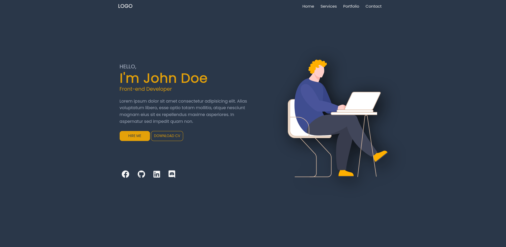

Fotografía documental
Reportajes fotográficos de pueblos, oficios y tradiciones con enfoque narrativo y sensibilidad territorial.
Fotografía, vídeo e historias del mundo rural
Cuento el territorio desde dentro: caminos, rostros, oficios y celebraciones que sostienen la vida en los pueblos. Trabajo con fotografía y vídeo para guardar memoria y compartirla con calma.

Soy Borja Gómez y miro el mundo rural con tiempo. Me interesan las historias pequeñas que casi nunca salen en portada: la gente que cuida un oficio, una conversación en la plaza, la luz de última hora sobre la piedra. Mi trabajo une fotografía, vídeo y escucha para dar voz a esas raíces sin artificio.
Producción visual con mirada documental, ritmo tranquilo y atención al detalle humano del entorno rural.
Reportajes fotográficos de pueblos, oficios y tradiciones con enfoque narrativo y sensibilidad territorial.

Piezas cortas y vídeos documentales pensados para difusión cultural, redes sociales y proyectos locales.

Cobertura de patrimonio, naturaleza y memoria local para construir relatos con identidad y voz propia.
Series documentales centradas en la relación entre paisaje, comunidad y memoria.
Categoría: Fotografía documental

Un recorrido por pueblos de la Serranía de Cuenca para retratar la vida cotidiana, sus silencios y sus vínculos con el territorio.
Ver serieCategoría: Retrato y oficio
Historias de personas que mantienen técnicas y saberes heredados. Piezas cercanas, sin prisa y con respeto por la memoria del oficio.
Ver serieCategoría: Paisaje y territorio
Secuencias de luz, clima y relieve para mostrar cómo el paisaje también cuenta historias de permanencia y cambio.
Ver serieCategoría: Vídeo documental
Reels y piezas cortas con testimonios locales, celebraciones y escenas del día a día que ayudan a entender el valor de cada lugar.
Ver serieCategoría: Cultura popular
Cobertura visual de fiestas, ritos y gestos comunitarios que mantienen encendida la identidad cultural de los pueblos.
Ver serieUn vistazo rápido al pulso visual del proyecto. Para ver las publicaciones completas, visita el perfil.
Si quieres colaborar en proyectos audiovisuales, narrativas del territorio o difusión cultural, hablemos.